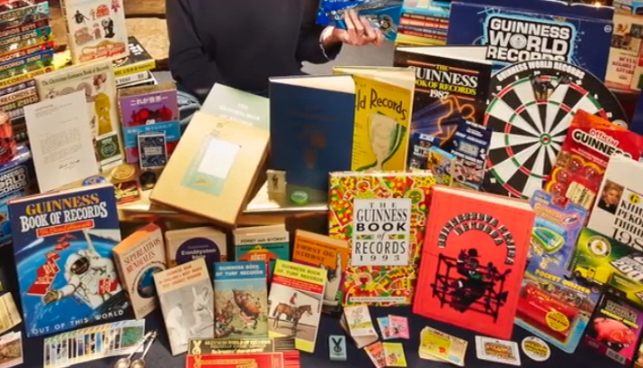
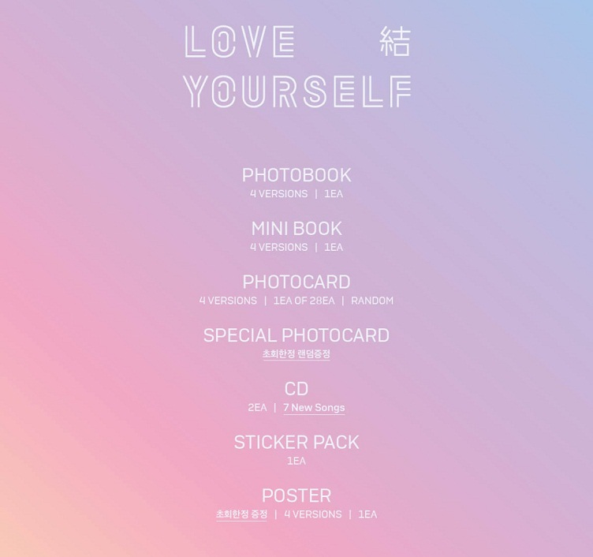
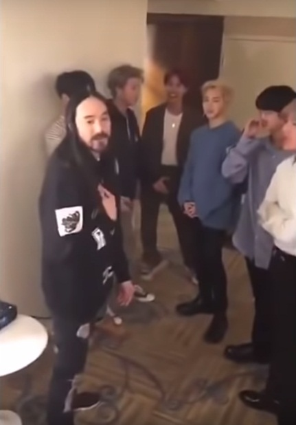
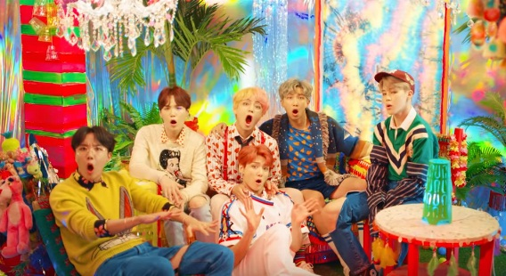
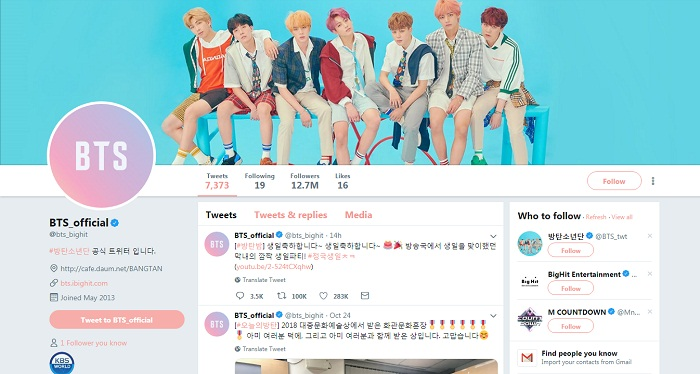

The records and achievements of Bangtan Boys
As one of the most recognizable K-Pop group in the world Bangtan Boys (often referred to as BTS) had broken multiple records during the last two years since they became international musical miracle in 2017. Here’s some of the most important records.
BTS was the first Korean group or soloist that was nominated at the Billboard Music Awards. They won the Top Social Artist award. What is more they were the first Korean artist to perform at the event with their song DNA.

J-Hope became the highest ranked soloist from South Korea on
Billboard 200 list with
Hope World that entered the list at the position No. 63 and peaked at No. 38.

Their album Love Yourself: Answer was a best-selling hit. More than 2 million copies were sold for the first time since the year 2000 when Jo Sung Mo’s album Let Me Love was released.
Bangtan Boys has two albums that peaked on the Billboard 200 list. Love Yourself: Tear reached No. 1 in June, 2018 and Love Yourself: Answer reached No. 1 in September that year. That’s the highest position any Korean artist ever occupied.
BTS is the highest selling
Korean group in
Japan with their album
Face Yourself when it comes to
KPop merchandise. It is the third Japanese album and in the first week it sold in 282,000 copies according to
Oricon Chart. That number broke the previous record by
Korean girl group
Kara when their album
Super Girl sold 275,000 units in 2011.
They were the first
K-Pop group that was certified gold by
RIAA. Their song
Mic Drop (
Steve Aoki Remix) was downloaded and streamed more than 500 thousand times.

In 2017 the song Blood Sweat & Tears was the first Korean song that scored 50 million listens on Spotify. No other K-Pop song could achieve this success.

Their song Fake Love placed higher than any of the songs of other K-Pop artists on the Billboard 100 list. The song peaked at the 10th position. It was another milestone after Mic Drop peaked at No. 28 and was followed up by IDOL (feat. Nicki Minaj) at No. 11 in September, 2018. The other song that was listed was DNA at No. 67 – that was the first time BTS found themselves on the list.
Bangtan Boys’ Blood Sweat & Tears was the fastest K-Pop song on Youtube that hit 10 million views. It took only 41 hours in October 2016. The members broke their record with Spring Day that reached 10 million only in 26 hours.
IDOL is the most viewed music video uploaded on Youtube during the first 24 hours. It reached 45 million views and broke the record of Taylor Swift’s Look What You Made Me Do. The members of BTS broke their own record previously held by Fake Love with 35.9 million views. What’s interesting is that Black Pink’s Ddu-du Ddu-du is also on the list – on the 4th position just after Eminem’s Killshot.
The group broke the
Guinness for the most average
number of engagements (likes, retweets, comments etc.) on
Twitter with 330,624 engagements on 23 April 2018. Their Twitter account
@bts_twt has almost 17 million followers at this time. The previous record was held by
Harry Styles from a boy band
One Direction. The other
K-Pop group that was listed by
Guinness is
EXO with 71,959 engagements.

The group has the most albums on the Billboard 200 list than any K-Pop artist. That includes Love Yourself: Tear, Love Yourself: Answer, Love Yourself: Her, Wings, Face Yourself, You Never Walk Alone, The Most Beautiful Moment In Life: Young Forever and The Most Beautiful Moment In Life, Part 2 – a total 8 albums.
BTS was the fastest Korean group ever to reach 300 million hits on Youtube. Their song DNA reached this number in 5 months and 8 days. The record is currently held by Black Pink.